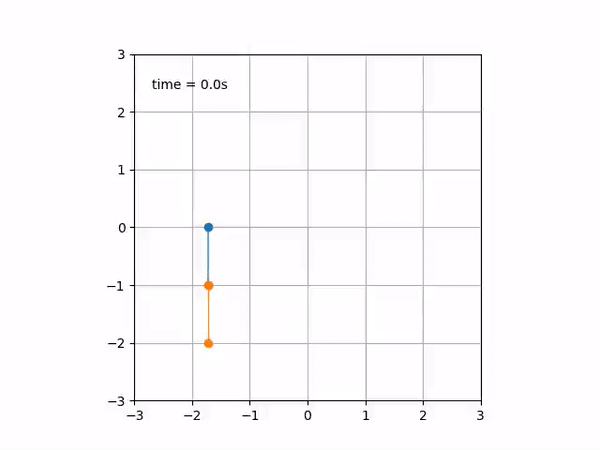
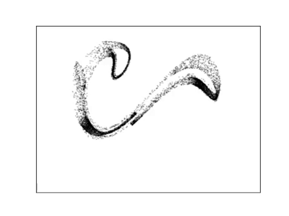
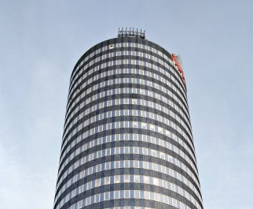
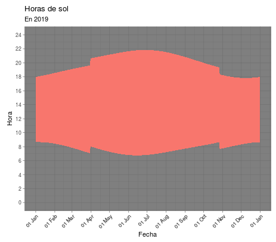

Portfolio
Scientific programming
| Pendulum | Dyntools |
|---|---|
| Python package for mechanical simulation of non-inertial simple and double pendula. | Python package for analysis and visualization of dynamical systems. It is still work in progress. |
|  |  |
| Rolldown | Elevator tool |
| R package for computing potentials and pseudopotentials as described in my paper Climbing Escher's ladder | Jupyter Notebook showing how much can be done using the smartphone accelerometer inside a skyscrapper's elevator |
|  | |
| Daylight charts | Sleep models |
| Shiny app showing the seasonal sunlight distribution in different Spanish locations, with and without daylight saving time | R package simulating classical mechanistic models of sleep dynamics |
|  |
Want to contribute? Follow me on GitHub!
PhD thesis
Available here.
Talks
Since 2013, I give at least one popular science talk per year in a theater. Below I show those talks with English subtitles. For a full list, click here.
| How to piss-off a mathematician | Random stuff about random numbers |
|---|---|
| Naukas Bilbao 2017 | Naukas Bilbao 2015 |
 |
 |
Blog
Since 2011 I write for Naukas.com, the largest science communication web-magazine in Spanish language. My blog, Fuga de cerebros (Brain drain), focuses in physics, mathematics, computational science, and the experience of emigrated scientists. For a full list of my texts (some of them in English), click here.
Teaching applets
Click here to access my applets collection.
Scientific publications
Click here here to access my publications list.